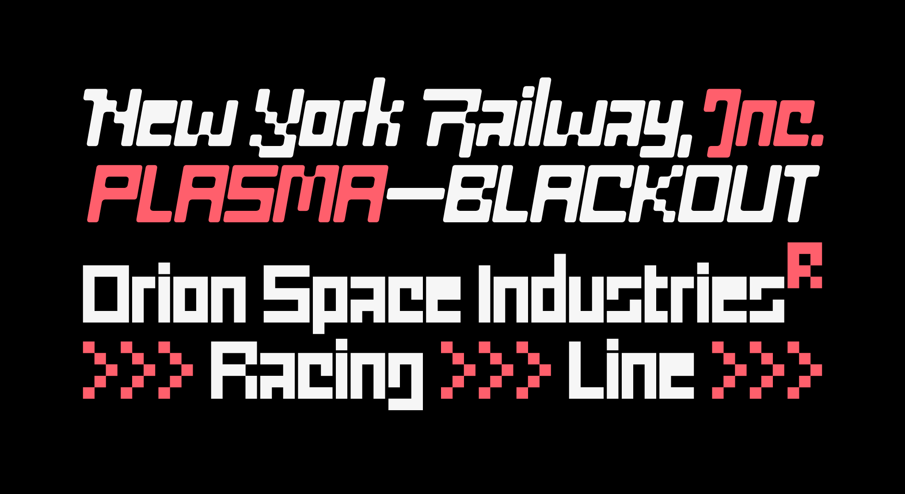
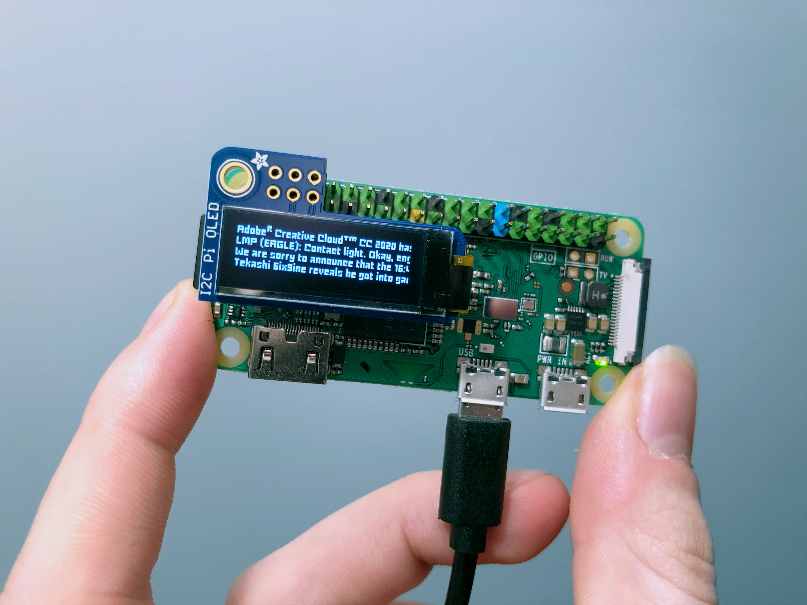

An exploration of reduction and scale in type design (2019–20)
MD Eight is an unconventional type family, consisting of an 8×8 pixel font, along with six display styles — built on the same structure, but designed for reproduction at large sizes. All seven styles feature swash caps, for some reason.
Available for licensing at Mass-Driver.
As part of the release marketing for this typeface, I created an interactive text adventure game, The Cave of Dolmenlore.

MD Eight Display · Tightly-spaced, with slanted and rounded styles.

MD Eight Pixel · The pixel font version of MD Eight, rendered on a PiOLED.